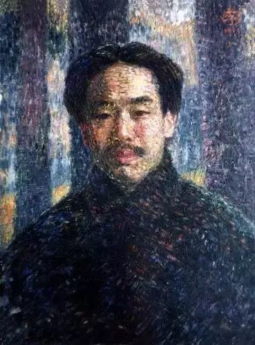
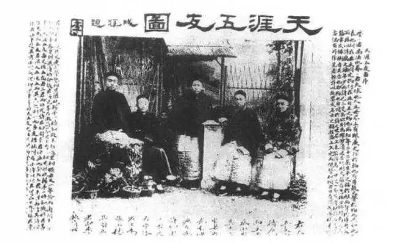
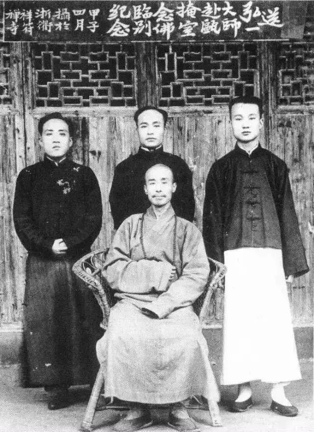

文化交流
让朴树可以一死的《送别》，送的是谁？
上周，他在节目上唱起这首歌，唱到一半失声痛哭。
这首词诞生在上个世纪，写这首词的作者，曾被林语堂评价“是我们时代里最有才华的几位天才之一，也是最奇特的一个人，最遗世而独立的一个人。”他是精通音乐、美术、书法、戏剧的大师李叔同，也是后来告别红尘的出家人弘一法师。

李叔同年轻时在日本留学，曾听过一首日文歌《旅愁》，这首歌翻唱自一首美国的民谣《梦见家和母亲》。悠扬凄婉的曲调让他大受触动，随即根据这个编曲，谱写了新词，就是现在广为传唱的《送别》。
长亭外，古道边，芳草碧连天。
晚风拂柳笛声残，夕阳山外山。
天之涯，地之角，知交半零落。
一壶浊酒尽余欢，今宵别梦寒。
不过关于《送别》的由来，流传更广的还有一个版本，为它增添了更具体的意义。李叔同有一位挚友许幻园，沪上著名的诗人小说家，曾是上海的富庶大户。清政府倒台后，全国上下政治运动风起云涌，许家受到时局牵连破产。一年冬天，大雪纷飞，上海一片凄凉，许幻园决定离开上海北上，两个人最后一次见面是在李叔同的家门口，许幻园留下一句话：“叔同兄，我家破产了，咱们后会有期。”说完便挥泪而别。李叔同百感交集又自知无法挽留，只能看着昔日好友远去的背影，在雪里站了整整一个小时。然后回到房间里，让夫人弹琴，自己含泪写下：长亭外，古道边，芳草碧连天……的传世佳作。
不管是哪个版本，可以确定的是，写出《送别》的李叔同，至少还没有成为弘一法师。中年以前的李叔同，是敏感的文艺男青年，他是含着金汤匙长大的少爷，尽管父亲早逝，但生活依然平顺。他8岁读四书五经，学书法、金石，13岁习训诂、攻历朝书法，便有名气。15岁那年，便一口吟诵出，“人生犹似西山日，富贵终如草上霜。”青少年时期经历过的最大挫折大概是康梁变法后，全家逃到上海避难。不过靠着殷实的家业，李叔同得以继续研究自己热爱的艺术。
当时在上海有个文艺团体“城南文社”，就是以许幻园为首集结的一批上海的文人才子，他们每月聚一次，相互切磋诗词文章，聚会的地点就在许幻园家的豪舍“城南草堂”。李叔同到达上海以后，在机缘巧合下加入了文社。他才气出众，在许幻园举办的一些悬赏征文活动里，总是名列前茅。
许幻园仰慕李叔同的才华，极力邀请他到自家城南草堂同住。李叔同应邀住进草堂后，许还特意在他的房门前挂上一块写有“李庐”的牌匾。从此许李两家和睦相处，这一年李叔同才20岁不到。
在李叔同的回忆里，住在城南草堂的6年，是他人生中最幸福的6年。他在那里结识了张小楼、蔡小香、袁希濂，加上许幻园，五人结为上海滩小时代兄弟团，号称“天涯五友”。每天醒来，跟挚友们一起摆弄书画，研究金石，讨论文章诗词，不闻窗外事。在那6年里，母亲、妻儿、朋友都在身边，人生所有的快乐大概都归结于此。

转折开始于1905年，母亲王氏病故，李叔同因为上街选棺木，没来得及见母亲最后一面，这成为他终身的遗憾。后来扶灵柩回老家，葬礼当天400人穿着黑衣，气氛悲伤，他也不哭天嚎地，只是在灵堂里一边弹钢琴，一边唱悼歌，倒是参加葬礼的见者落泪。这场葬礼后，他就东渡日本留学去了。
李叔同的26岁，是充满离别的一岁，他在这一年失去母亲，告别了草堂和朋友，也没有带上妻子儿女，独自一人去东京学美术，学西洋绘画。在他看来，从这一年开始，他的人生只剩下“不断的悲哀与忧愁”。尽管他后来在日本又有了新的太太，10年后又回国到学校任教，结交新的朋友、学生。不断认识新的人，又不断跟旧人告别，然后更增一层“悲哀”和“忧愁”。
有的人面对“忧愁”会本能地选择逃避，然后在一次次面对生活的挫折后日益消沉颓废。有的人则会超然于这份忧愁，在绝望和丧气后看到新的世界，这是更艰难的境界。李叔同就是后者。他在这期间写下《送别》，有一点凄凉，更多的却是潇洒、通透、“悲欣交集”，正如他在临终前留下的四字绝笔。
1916年，他在这份“悲欣交集”中，决定彻底跟自己的前半生告别。他在杭州找了座僻静的寺庙，修心拜佛，2年后正式出家，取法号弘一。
在李叔同出家几年后，和“天涯五友”的另外三人许幻园、张小楼、袁希濂重聚过一次，五友中的蔡小香已经过世，许幻园北上仕途不顺，家道中落，袁希濂也早已卸去政职，在袁的劝说下，许、袁两人后来也出家为居士，许幻园在两年后过世。李叔同从此闭关向佛，断绝一切尘世往来，专事佛学著述。

关于《送别》，现在能够找到的最早的中文录音版本之一，应该是1935年，百代唱片发行的一张由龙珣演唱的老唱片。龙珣是当时北京北师附小的学生，他唱的这个版本的《送别》，李叔同当时还有一段新词：
草碧色，水绿波，南浦伤如何？
人生难得是欢聚，惟有别离多。
草碧色，水绿波，南浦伤如何？
问君此去几时来，来时莫徘徊。
只是现在流传的只剩下了前半部分。
20世纪80年代，导演吴贻弓将林海音的小说《城南旧事》拍成电影，他为童年的英子经历的每一次离别，配上《送别》的背景音乐。
后来《送别》被录入小学教科书，长大后又成为每一场毕业式的挽歌。
100年过去，没有了长亭古道，离别依然刻骨铭心，你心中的《送别》又有什么样的故事呢？